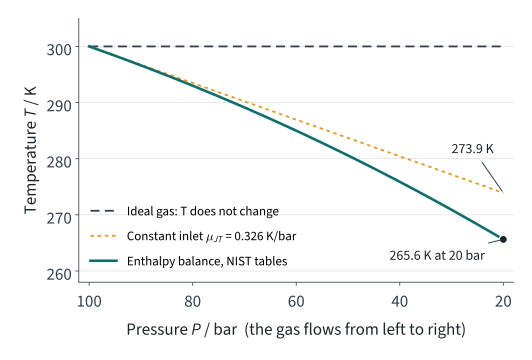
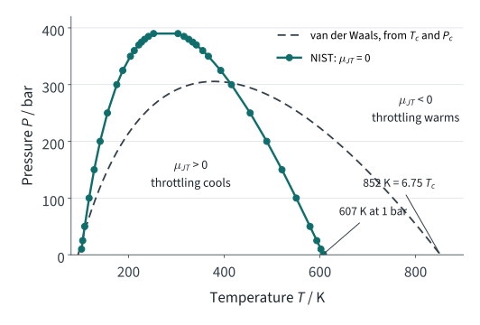
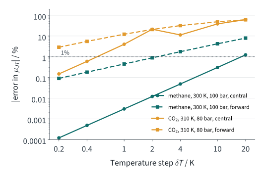
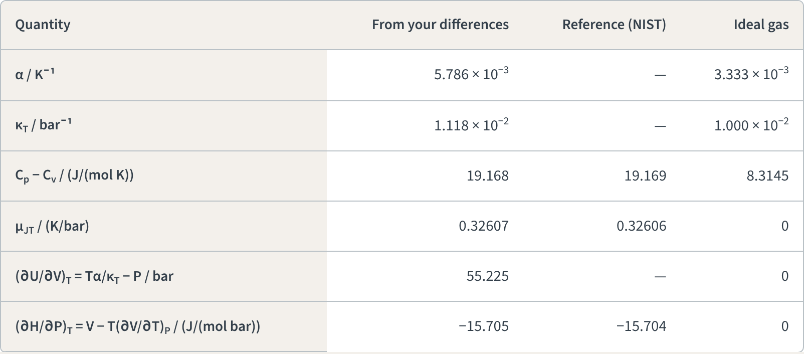

Session P1 of 7 · before the midterm · 180 minutes
Before the midterm · 7 sessions P1 · Framework P2 · PVT and equations of state P3 · Residual properties P4 · Pure-component equilibrium and fugacity P5 · Mixtures P6 · Excess properties and activity P7 · Choosing a property model
After the midterm · 7 sessions 1 · VLE and flash 2 · Experimental VLE and consistency 3 · Liquid stability and LLE 4 · Solids and adsorption 5 · Chemical equilibrium 6 · Electrochemical equilibrium 7 · Choosing a model from evidence
Every later session needs properties that nobody measures directly: H, S, G, μ, fugacity. Today: how all of them follow from what can be measured, PVT data and Cp, and why equilibrium at fixed T and P means minimum G.

Methane at 300 K and 100 bar passes a valve to 20 bar. No heat, no work: Hout = Hin.
An ideal gas leaves at 300 K. The real gas leaves at 265.6 K, 34 K colder, near the hydrate and brittle-steel range of a gas plant.
Using the inlet slope all the way gives 273.9 K, still 8 K off.
By the end of today you can compute all three, and say which data each needs.
NIST Chemistry WebBook, SRD 69: methane from the Setzmann and Wagner (1991) reference equation of state. Lab P1 B.
Where you show it
0–30 Essential concepts potentials, Maxwell, measurables
30–40 Activity 1 a derivative in measurables
40–60 Demo Lab P1
60–70 Break
70–140 Activity 2 · pair investigation a valve, a near-critical fluid
140–180 Discussion and exit ticket answer the session question
Session question How do we obtain the properties a process needs, such as H, S and the Joule–Thomson coefficient, from what can be measured, and what does equilibrium require?
Before class · 15–20 min Review the first and second laws and partial derivatives (chain rule, triple product). Bring one question.
After class · 30–40 min Finish Lab P1: all six states, then A–C in the Graduate view. Submit the study file with your name and ID.
Studying on your own? Follow the same order. Turn on narration or captions at the bottom left, and pause at each activity slide.
First and second laws for a reversible change of an open, single-phase system:
dU=T\,dS-P\,dV+\sum_i\mu_i\,dn_i
U(S, V, n) is a fundamental relation: it contains every equilibrium property. Integrating at fixed intensive state (Euler):
U=TS-PV+\sum_i\mu_in_i
Subtracting the differential of the Euler form from dU gives the Gibbs–Duhem equation:
S\,dT-V\,dP+\sum_in_i\,d\mu_i=0
T, P and the μi of a phase are not independent. Session 2 uses this to test measured activity coefficients.
μi is the chemical potential of i: (∂U/∂ni) at fixed S, V and the other nj.
Four potentials, fixed amounts
| Potential | Natural variables | Differential |
|---|---|---|
| U | S, V | dU = T dS − P dV |
| H = U + PV | S, P | dH = T dS + V dP |
| A = U − TS | T, V | dA = −S dT − P dV |
| G = H − TS | T, P | dG = −S dT + V dP |
Each transform swaps one variable for its conjugate without losing information.
In a lab or a plant we fix T and P, so G is the useful one:
\mu_i=\Big(\frac{\partial G}{\partial n_i}\Big)_{T,P,n_{j\neq i}}
For a pure substance μ = G/n, the molar Gibbs energy.
Clausius: for any real change of a closed system, T dS ≥ δQ. With dU = δQ − P dV at fixed T and P:
dG=dU+P\,dV-T\,dS\le0
G can only fall. At equilibrium it is a minimum over all internal changes.
Consequences for phases α and β in contact:
T^\alpha=T^\beta,\qquad P^\alpha=P^\beta,\qquad \mu_i^\alpha=\mu_i^\beta
The last is the condition for every phase-equilibrium problem in this course (P4, Session 1).
Stability of a single phase needs Cv > 0 and κT > 0. An equation-of-state loop where κT < 0 is unstable (P2).
The mixed second derivatives of a potential are equal. From dG and dA:
\Big(\frac{\partial S}{\partial P}\Big)_T=-\Big(\frac{\partial V}{\partial T}\Big)_P
\Big(\frac{\partial S}{\partial V}\Big)_T=\Big(\frac{\partial P}{\partial T}\Big)_V
Entropy cannot be measured directly. These relations replace its derivatives by PVT derivatives.
Methane, 300 K, 100 bar · NIST tables
| J/(mol K bar) | |
|---|---|
| (∂S/∂P)T from the isotherm | −0.123485 |
| −(∂V/∂T)P from the isobar | −0.123485 |
The tables come from one fundamental equation, so they satisfy Maxwell by construction. Data from two laboratories would not agree this well.
Rules for x, y, z related by one equation:
\Big(\frac{\partial x}{\partial y}\Big)_z\Big(\frac{\partial y}{\partial z}\Big)_x\Big(\frac{\partial z}{\partial x}\Big)_y=-1
\Big(\frac{\partial x}{\partial y}\Big)_z=\Big(\frac{\partial x}{\partial w}\Big)_z\Big(\frac{\partial w}{\partial y}\Big)_z
Method: to express a derivative in measurables,
Example: (∂P/∂T)V = −(∂V/∂T)P/(∂V/∂P)T = α/κT. With step 2 this gives Cp − Cv on the next slide.
\alpha=\frac{1}{V}\Big(\frac{\partial V}{\partial T}\Big)_P\qquad \kappa_T=-\frac{1}{V}\Big(\frac{\partial V}{\partial P}\Big)_T
C_p=T\Big(\frac{\partial S}{\partial T}\Big)_P
C_p-C_v=\frac{TV\alpha^2}{\kappa_T}
Ideal gas: α = 1/T, κT = 1/P, so Cp − Cv = R.
Methane, 300 K · NIST tables
| 1 bar | 100 bar | ideal gas | |
|---|---|---|---|
| Z | 0.998 | 0.856 | 1 |
| α / 10⁻³ K⁻¹ | 3.354 | 5.786 | 3.333 |
| κTP | 1.002 | 1.118 | 1 |
| Cp − Cv / (J/(mol K)) | 8.39 | 19.17 | 8.31 |
At 100 bar the dense gas expands 74% more on heating than an ideal gas.
With T and P as variables, Maxwell gives
dH=C_p\,dT+\Big[V-T\Big(\frac{\partial V}{\partial T}\Big)_P\Big]dP
dS=\frac{C_p}{T}\,dT-\Big(\frac{\partial V}{\partial T}\Big)_P\,dP
The brackets need only PVT data. For an ideal gas the dP term of dH is zero: H depends on T alone.
The plan for P2 and P3: integrate dP at low pressure, where the gas is ideal and Cp is the ideal-gas Cpig(T), then along the real isotherm with an equation of state.
The second step is the residual property: H − Hig at the same T and P.
Methane at 300 K and 100 bar: (∂H/∂P)T = −15.70 J/(mol bar). Over 80 bar that is about 1.3 kJ/mol, the energy behind the 34 K drop.
At constant H, dH = 0 in the previous slide:
\mu_{JT}=\Big(\frac{\partial T}{\partial P}\Big)_H=\frac{T(\partial V/\partial T)_P-V}{C_p}
\mu_{JT}=\frac{V(T\alpha-1)}{C_p}
A pressure drop cools the fluid where Tα > 1 and warms it where Tα < 1. Ideal gas: Tα = 1 exactly, μJT = 0.
μJT from the NIST tables
| State | Tα | μJT / (K/bar) |
|---|---|---|
| CO₂, 300 K, 10 bar | 1.185 | +1.080 |
| methane, 300 K, 100 bar | 1.736 | +0.326 |
| nitrogen, 300 K, 50 bar | 1.110 | +0.175 |
| liquid water, 298.15 K, 1 bar | 0.077 | −0.0221 |
Liquids warm on throttling: 100 bar warms water by 2.2 K.

Inside the curve μJT > 0. Nitrogen at 1 bar stops cooling above 607 K.
Van der Waals, from Tc and Pc only Predicts 6.75Tc = 852 K (+40%) and no inversion above 9Pc = 306 bar. The tables show inversion up to about 390 bar.
A two-parameter cubic gets the shape and misses the numbers. P2 asks why, and what better equations add.

Forward error ∝ δT·V″; central error ∝ δT²·V‴.
Methane, 300 K, 100 bar Central, δT = 10 K: within 0.3%.
CO₂, 310 K, 80 bar Close to the critical point (304.1 K, 73.8 bar) V(T) bends sharply. Central, δT = 1 K: +4.0%; forward: −12.2%. Central, 0.2 K: +0.15%.
A step that is safe in one state is not safe in another. Check it.
Activity 1 · 10 minutes · alone, then with a partner
Express (∂U/∂V)T and (∂H/∂P)T in T, P, V, α and κT. Evaluate both for an ideal gas, and for liquid water at 298.15 K and 1 bar: V = 18.07 cm³/mol, α = 2.573 × 10⁻⁴ K⁻¹, κT = 4.525 × 10⁻⁵ bar⁻¹.
Start from dU = T dS − P dV and dH = T dS + V dP, and use one Maxwell relation for each. Compare your expressions with your partner before you put in numbers.
On your own: pause here and write your answer. In place of a partner, compare it with the next slide and write one sentence on any difference and its cause.
\Big(\frac{\partial U}{\partial V}\Big)_T=T\Big(\frac{\partial P}{\partial T}\Big)_V-P=\frac{T\alpha}{\kappa_T}-P
\Big(\frac{\partial H}{\partial P}\Big)_T=V-T\Big(\frac{\partial V}{\partial T}\Big)_P=V(1-T\alpha)
Ideal gas: Tα/κT = P and Tα = 1, so both are zero.
Liquid water, 298.15 K, 1 bar
Tα = 0.0767
(∂U/∂V)T = 0.0767/(4.525 × 10⁻⁵) − 1 = 1694 bar = 169 MPa
(∂H/∂P)T = 18.07 × 0.923 = 16.68 cm³/mol = 1.668 J/(mol bar) (1 cm³ bar = 0.1 J)
So μJT = −1.668/75.33 = −0.0221 K/bar.
The internal pressure of water is about 1700 times the outside pressure: the cohesion that the ideal gas leaves out.

Lab P1 should report Methane, 100 bar: Cp − Cv = 19.17 J/(mol K) · μJT = 0.3261 K/bar · water: μJT = −0.0221 K/bar · valve: 265.6 K
Cp − Cv = R for a dense gas. Methane at 100 bar: 19.2 J/(mol K), not 8.3. The ideal-gas identities hold only where α = 1/T and κT = 1/P.
One μJT for a large pressure drop. μJT changes with T and P along the path. The methane valve: 8 K error. Use the enthalpy balance.
A forward difference near the critical point. CO₂ at 310 K and 80 bar: −12% with δT = 1 K. Use central differences and check the step.
Mixing units in PV terms. 1 L bar = 100 J and 1 cm³ bar = 0.1 J. Most wrong μJT values are off by a power of ten.
Next Activity 2: a pair investigation in Lab P1, 70 minutes.
Before you leave your seat, check that Lab P1 opens on your device and that the methane case is saved.
Activity 2 · 70 minutes · in pairs: one drives Lab P1, one checks by hand, then swap
20 min · by hand From the Lab P1 rows for methane at 100 bar (Step 2, paper check), compute α, κT, Cp − Cv and μJT. Then estimate the valve outlet with a constant μJT.
20 min · the valve Lab P1 B: compare the four outlet temperatures for methane and nitrogen. Why does one integration step already do well?
15 min · near critical Lab P1 A on CO₂ at 310 K and 80 bar: the largest δT that keeps μJT within 1%, central and forward.
15 min · explain Two sentences with numbers answering the session question. Download the study file with your names and IDs.
On your own: do both roles yourself: work in Lab P1, then check one value by hand before you trust it. Pause the slides while you work; the next slide lists what to hand in.
Graduate extension Lab P1 C: compare the nitrogen inversion curve with van der Waals. Which feature of a real fluid does a two-parameter equation miss?
Check your results
| methane valve | nitrogen | |
|---|---|---|
| inlet | 300 K, 100 bar | 300 K, 200 bar |
| outlet P | 20 bar | 1 bar |
| ideal gas / K | 300 | 300 |
| constant inlet μJT / K | 273.9 | 285.8 |
| one integration step / K | 266.6 | 269.5 |
| enthalpy balance / K | 265.6 | 269.2 |
CO₂, 310 K, 80 bar: central needs δT ≤ 0.4 K for 1%; forward never reaches 1% in the table.
Discuss in pairs, then with the class. On your own: write two or three sentences for each question.
Framework dU = T dS − P dV + Σμidni; Legendre transforms give H, A, G. At fixed T and P, G is minimal and μi is equal in every phase.
Measurables Maxwell relations turn S derivatives into PVT derivatives. α, κT and Cp then give Cp − Cv, μJT and (∂H/∂P)T.
Numbers A derivative from a table is only as good as its step; near a critical point the step must be small.
Session question: with dH = CpdT + [V − T(∂V/∂T)P]dP, PVT data and Cp give every property. The methane valve leaves at 265.6 K, not the 300 K of an ideal gas.
Next session P2: where the PVT data come from when there is no table, the equations of state.
Exit ticket and feedback · alone · 5 minutes · anonymous
Methane leaves a valve 34 K colder than it entered, but an ideal gas would leave at the same temperature. Which term of dH carries the difference, and which two measured properties do you need to evaluate it?
Scan the code or open the link. The same form asks three short questions about today: pace, confidence and whether the lab worked.
No name or student ID is recorded. Wait for “Response received.”
Hand in · this week Your Lab P1 study file with the six states, A and B, name and student ID. Upload it to myCourseVille, in the assignment for that lab.
Prepare · Session P2 Read the Session P2 pre-class note. About 20 minutes.
Optional · graduate Lab P1 C: the nitrogen inversion curve against van der Waals.
Open Lab P1 in the Graduate view →
Starts at 4. Investigate what the tables can support. A: first button Run the step-size study. B: Compare the outlet temperatures. C: Find the inversion temperatures.